Tema 3.A.34
Teorías de la inversión en bienes de equipo. Incertidumbre e irreversibilidad de la inversión. Implicaciones de política económica.
Eficiencia marginal del capital, acelerador, coste de uso de Jorgenson, q de Tobin con costes de ajuste, opción de esperar, incertidumbre y financiación.
Exclusivo Material exclusivo de victorgutierrezmarcos.es y la app Oposición TCEE · DCE. Puedes usarlo libremente para tu estudio personal. No se autoriza su incorporación a otras plataformas, aplicaciones o servicios. Condiciones de uso.
Introducción
Enganche:
«Antes de que te cases, mira lo que haces», aconseja el refrán. Comprar una máquina tiene mucho de boda: entrar es fácil y salir sale caro, porque un equipo hecho a la medida de una fábrica apenas vale nada fuera de ella.
En abril de 2025, con el anuncio de aranceles generalizados de Estados Unidos, el índice de incertidumbre de política económica de España que elaboran Baker, Bloom y Davis marcó el valor más alto de su historia, y el del Banco de España cerró el año un 77 % por encima de su media histórica. Cuando el horizonte se nubla, las empresas aplazan la compra de equipo hasta ver más claro.
Detrás está la pregunta de esta exposición: ¿por qué invierten las empresas y por qué, a veces, dejan de hacerlo aunque el dinero sea barato y los proyectos parezcan rentables?
Relevancia:
A largo plazo: la inversión acumula el capital que, junto con el progreso técnico, explica el crecimiento de la renta por habitante [ver tema 3.A.43]. En España, la formación bruta de capital fijo (FBCF) fue el 21,0 % del PIB en 2025, como en la zona del euro (21,3 %); llegó al 30,0 % en 2006, en plena expansión inmobiliaria, y cayó al 17,6 % en 2013.
A corto plazo: es el componente más volátil de la demanda. Entre 1996 y 2019, la tasa de variación interanual de la FBCF de España osciló casi 3 veces más que la del PIB (desviación típica de 6,6 frente a 2,3 puntos), y en el segundo trimestre de 2009 cayó un 20,3 %, con el PIB en el \(-4{,}3\) %. Buena parte de las recesiones son caídas de la inversión [ver tema 3.A.42].
Para la política económica: es el canal por el que actúa buena parte de la política monetaria (coste del capital, precio de las acciones, crédito) [ver tema 3.A.37] y el blanco de los incentivos fiscales [ver tema 3.A.38].
Contextualización:
. Desde un punto de vista conceptual:
La inversión es el flujo con el que las empresas llevan su stock de capital hacia el deseado. La inversión bruta suma la neta y la reposición de lo que se desgasta: \(I_t=\dot K_t+\delta K_t\).
En la contabilidad nacional (SEC 2010), la formación bruta de capital suma la FBCF, la variación de existencias y las adquisiciones menos cesiones de objetos valiosos [ver tema 3.A.30]. La FBCF se divide por tipo de activo en:
construcción: viviendas y otros edificios y construcciones;
maquinaria y bienes de equipo, incluido el material de transporte: los bienes de equipo del título;
productos de la propiedad intelectual (I+D, programas informáticos y bases de datos);
recursos biológicos cultivados.
Los modelos de esta exposición explican la inversión productiva de las empresas: la maquinaria y los bienes de equipo (el 26,8 % de la FBCF de España en 2025), los productos de la propiedad intelectual (19,7 %, casi el triple que el 7,0 % de 1995) y los edificios y construcciones no residenciales (24,7 %). Juntos son siete de cada diez euros invertidos (71,9 %). La vivienda (28,1 %) responde a la demanda de los hogares, como los bienes de consumo duradero, y tiene sus propios determinantes [ver tema 3.A.33].
Gráfico 1.– Formación bruta de capital fijo de España por tipo de activo, 1995-2025 (% del PIB) 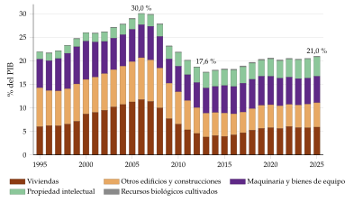
Fuente: elaboración propia a partir de Instituto Nacional de Estadística (2026b) (Contabilidad Nacional Trimestral, base 2020, suma de los cuatro trimestres de cada año).
Desde un punto de vista histórico:
Para los clásicos, la inversión no era un problema de demanda: el ahorro de los capitalistas se convertía en acumulación de capital (ley de Say). En Ricardo (1817), la acumulación se frena porque los rendimientos decrecientes de la tierra rebajan la tasa de beneficio hasta el estado estacionario; en Marx (1867), es el motor del sistema y el origen de sus crisis [ver tema 3.A.2].
Keynes (1936) hace de la inversión la variable que manda: depende de expectativas volátiles, los animal spirits, y su caída explica el paro [ver tema 3.A.4]. Sus seguidores la ligan a la variación de la renta: es el acelerador.
En los años 60, Jorgenson (1963) la deriva de la maximización del beneficio de la empresa: es la teoría neoclásica, con su coste de uso del capital. Las críticas a su dinámica llevan a los costes de ajuste y a la q de Tobin (1969), que Abel (1982) y Hayashi (1982) reúnen en un solo modelo.
Desde los 80, la teoría incorpora lo que Keynes ya intuía: la incertidumbre y la irreversibilidad, y las imperfecciones financieras.
La conclusión que se puede adelantar es que la política económica mueve la inversión cuando abarata el capital, pero sobre todo cuando da estabilidad: reglas creíbles y un futuro menos incierto.
Problemática (preguntas clave):
¿Cuánto capital quiere una empresa y a qué ritmo lo acumula? ¿Depende de la demanda, del tipo de interés, de los impuestos o de las expectativas?
¿Por qué la inversión se ajusta poco a poco y, aun así, es tan volátil?
¿Qué cambia cuando el futuro es incierto y lo invertido no se puede recuperar? ¿Importa cómo se financia la inversión?
¿Qué puede hacer la política económica: abaratar el capital o reducir la incertidumbre?
Estructura:
La exposición sigue el orden en que la teoría ha ido levantando supuestos. Primero se pregunta cuánto capital se desea; después, cómo se llega a él si ajustarlo cuesta, y, por último, qué pasa cuando el futuro es incierto y lo invertido no se recupera.
I. Antecedentes: de Keynes al modelo neoclásico (I): la eficiencia marginal del capital, el acelerador y el coste de uso del capital de Jorgenson, que da el capital deseado pero no una senda de inversión.
II. Costes de ajuste: el modelo de la q (II): ajustar el capital cuesta, la empresa mira al futuro y la inversión depende de la q, el valor de una unidad más de capital instalado.
III. Extensiones: incertidumbre, irreversibilidad y financiación de la inversión (III): con costes asimétricos, incertidumbre e inversión irreversible, esperar tiene valor; con mercados financieros imperfectos, también importa cómo se financia la inversión. Cerramos con la síntesis de las implicaciones de política económica.
3.A.34. Teorías de la inversión en bienes de equipo
Introducción2′30″
I. Antecedentes: de Keynes al modelo neoclásico7′
1. Keynes: \(\mathrm{EMgK}=i\)
2. Acelerador: \(I_t=v\,\Delta Y_t\)
3. IS-LM
4. Jorgenson: \(P\,F_K=c_K\)
II. Costes de ajuste: el modelo de la q9′30″
1. Modelo: \(q=1+\Phi'({I})\), \(r\,q=B(K)+\dot q\)
2. Implicaciones
3. Evidencia y valoración
III. Extensiones: incertidumbre, irreversibilidad y financiación de la inversión10′
1. Costes asimétricos y fijos
2. Incertidumbre
3. Irreversibilidad: la opción de esperar
4. Mercados financieros
5. Síntesis de las implicaciones de política económica
Conclusión1′
Reparto del cante: introducción, 2′30″; I, 7′ (I.1, 1′30″; I.2, 1′30″; I.3, 0′30″; I.4, 3′30″); II, 9′30″ (II.1, 4′30″; II.2, 3′; II.3, 2′); III, 10′ (III.1, 2′; III.2, 2′; III.3, 3′30″; III.4, 1′30″; III.5, 1′), y conclusión, 1′. Los antecedentes se cantan deprisa: lo que el tribunal quiere oír es el coste de uso, la q con su diagrama de fases y, sobre todo, la opción de esperar. Las derivaciones están en los anexos, para las preguntas del tribunal.
I. Antecedentes: de Keynes al modelo neoclásico
En el cante (7′): Keynes (1′30″), con la definición de la eficiencia marginal del capital, la función lineal y, si sobra tiempo, el gráfico 2 a mano alzada; el acelerador (1′30″), con \(I_t=v\,\Delta Y_t\) escrito y la versión flexible de palabra (su gráfico no se dibuja); la síntesis neoclásica (0′30″), de palabra; Jorgenson (3′30″), con el problema de la empresa en palabras, el coste de uso y el gráfico 4. La derivación con el hamiltoniano, las condiciones de Inada y el coste de uso con impuestos son de profundización.
Conclusión anticipada: las primeras teorías de la inversión son funciones ad hoc, sin optimización: la de Keynes depende de las expectativas y del tipo de interés; el acelerador, de la variación de la renta. Jorgenson la deriva de la maximización del beneficio y llega a una regla sencilla, que el producto marginal del capital iguale su coste de uso. Pero todas explican el capital deseado, no a qué ritmo se invierte para alcanzarlo.
Empezamos por Keynes, que fue el primero en hacer de la inversión una variable autónoma de la demanda.
I.1. Keynes (1936): la eficiencia marginal del capital
a) Idea
En la Teoría general, Keynes (1936, caps. 11 y 12) separa la decisión de invertir de la de ahorrar: la inversión no depende del ahorro disponible, sino de lo que los empresarios esperan ganar con ella y del tipo de interés. Como es la parte más inestable de la demanda, sus oscilaciones explican las del empleo [ver tema 3.A.4].
b) Modelo
i) Supuestos
Economía cerrada con precios rígidos a corto plazo.
El tipo de interés se determina en el mercado de dinero, por la preferencia por la liquidez, y no en el de fondos prestables [ver tema 3.A.35].
Las expectativas a largo plazo de los empresarios son exógenas: dependen de su estado de ánimo, más que de un cálculo.
ii) Desarrollo
Los empresarios ordenan los proyectos por su eficiencia marginal del capital (\(\mathrm{EMgK}\)): la tasa de descuento que iguala el valor actual de los rendimientos esperados de un bien de capital, \(R^e_t\), con su precio de oferta, \(P^K\): \[P^K=\sum_{t=1}^{T}\frac{R^e_t}{(1+\mathrm{EMgK})^t}.\] Es la tasa interna de rentabilidad del proyecto [ver tema 3.B.2].1
Se invierte en todo proyecto cuya eficiencia marginal supere el tipo de interés, hasta que \[\mathrm{EMgK}=i,\] donde \(i\) es el tipo de interés monetario; con precios rígidos, coincide con el real.
La curva de la eficiencia marginal es decreciente por 2 razones: cuanto más capital, menor es el rendimiento esperado de una unidad más y, a corto plazo, la propia inversión encarece los bienes de capital. La segunda hace de la curva una demanda de inversión y no solo de capital.2
La síntesis neoclásica la resume en una función lineal: \[I=\overline{I}-b\,i,\qquad b>0,\tag{1}\] con 2 componentes (gráfico 2):
el autónomo, \(\overline{I}\), que recoge las expectativas a largo plazo y los animal spirits, «un impulso espontáneo a la acción, en vez de a la inacción», y no una media ponderada de beneficios por probabilidades. Es el de más peso y el más volátil: el optimismo o el pesimismo de los empresarios desplazan toda la curva;
el inducido, \(-b\,i\), el movimiento a lo largo de la curva. Para Keynes, \(b\) es pequeño: el tipo de interés es un determinante de segundo orden.
Detrás de los animal spirits está la incertidumbre: el futuro no se puede reducir a probabilidades conocidas. Keynes lo dejó claro al responder a sus críticos: lo central de la Teoría general es la incertidumbre que rodea a las decisiones de inversión.
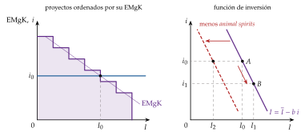
Fuente: elaboración propia a partir de Keynes (1936, cap. 11).
iii) Implicaciones de política económica
Problemas: para que no haya paro, la inversión tiene que cubrir la brecha que deja una propensión a consumir menor que uno. Tres rasgos de la inversión lo impiden:
el pesimismo de los empresarios;
los rendimientos decrecientes del capital, que bajan su eficiencia marginal a medida que se acumula;
unos tipos de interés demasiado altos, que no bajan por la preferencia por la liquidez.
Política monetaria: poco eficaz sobre la inversión privada, por 2 eslabones débiles: la inversión responde poco al tipo (\(b\) pequeño) y el tipo baja poco si la preferencia por la liquidez es muy alta [ver tema 3.A.35].3
Política fiscal: eficaz sobre la renta, y la inversión pública puede suplir a la privada cuando faltan animal spirits. Keynes (1936, cap. 24; traducción propia) llega a defender «una socialización bastante completa de la inversión» como único medio de acercarse al pleno empleo.
Lo que más importa es sostener la confianza: la inversión cae porque cambian las expectativas, más que porque suba el tipo de interés.
c) Valoración
Es una teoría de la demanda de capital, más que de la inversión: no explica a qué ritmo se ajusta el stock.
La función es ad hoc: no sale de un problema de optimización, y los animal spirits no se observan.
Su gran aportación, la incertidumbre que no se puede medir con probabilidades [ver tema 3.A.10], volverá en el apartado III.
Los seguidores de Keynes buscaron lo que le faltaba: una regla para el ritmo de la inversión. Es el acelerador.
I.2. Teorías poskeynesianas: el acelerador
a) Idea
Para pasar de una demanda de capital a una de inversión hace falta un supuesto sobre el ritmo al que se ajusta el stock. El principio de aceleración lo da: las empresas invierten para producir lo que se les demanda, así que lo que mueve la inversión es la variación de la producción.
Los seguidores de Keynes lo combinaron con el multiplicador para explicar el ciclo. Son funciones de inversión ad hoc, sin optimización.
b) Modelo
i) Supuestos
Precios rígidos: si la demanda aumenta, las empresas producen más en vez de subir los precios, y para producir más necesitan más capital.
Tecnología de coeficientes fijos (Leontief): cada unidad de producto exige \(v\) unidades de capital y una cantidad fija de trabajo, sin sustitución entre los dos. La empresa desea mantener constante la relación capital-producto, \(v\): \[K^*_t=v\,Y^e_t.\]
Expectativas estáticas: el crecimiento esperado de la producción es el de hoy.
ii) Desarrollo
La inversión neta es la variación del capital deseado y, con expectativas estáticas, es proporcional al aumento de la producción: \[I_t=\Delta K^*_t=v\,\Delta Y_t.\tag{2}\]
Como \(v\) compara un stock con la producción de un año, es mayor que uno (de 2 a 3): una variación pequeña de la producción provoca una variación grande de la inversión. Ese es el efecto acelerador, tanto mayor cuanto mayor es \(v\). Es la misma \(v\) del modelo de Harrod y Domar [ver tema 3.A.43].
iii) Implicaciones de política económica
Política monetaria: nada eficaz; la inversión no depende del tipo de interés.
Política fiscal: eficaz, porque la renta arrastra a la inversión y no hay expulsión por el tipo de interés. En el periodo del impulso, con \(Y_{t-1}\) dado, \(Y_t=c\,Y_t+v\,(Y_t-Y_{t-1})+G_t\), y \[\frac{\partial Y_t}{\partial G_t}=\frac{1}{1-c-v},\] mayor que el multiplicador simple. Pero es solo el multiplicador de impacto y solo tiene sentido si \(c+v<1\). A largo plazo, cuando la renta deja de crecer, la inversión inducida se anula y el multiplicador vuelve a ser \(1/(1-c)\).4
c) Extensiones: el acelerador flexible
El capital no se ajusta de golpe: hay retardos de decisión, de financiación, de entrega y de instalación. Por eso se supone que la inversión responde a las variaciones de la producción de todos los periodos anteriores, con pesos que decrecen al alejarse en el tiempo: \[I_t=v\sum_{j=0}^{\infty}\beta_j\,\Delta Y_{t-j},\qquad \sum_{j=0}^{\infty}\beta_j=1.\] Los pesos suman uno: a largo plazo se invierte todo lo que pide el aumento de la producción.
Con pesos geométricos, \(\beta_j=\beta_0\,(1-\beta_0)^j\) y \(0<\beta_0\leq 1\), equivale al ajuste parcial del capital: cada periodo se cierra una fracción \(\beta_0\) de la distancia al capital deseado, \[K_t-K_{t-1}=\beta_0\,(K^*_t-K_{t-1}),\qquad K^*_t=v\,Y_t.\] Con \(\beta_0=1\) se vuelve al acelerador simple. Ante un aumento permanente de la producción, la inversión salta y vuelve poco a poco a cero, mientras el capital se acerca al deseado (gráfico 3).
Implicaciones: la política fiscal sigue siendo eficaz, pero menos y más despacio (el multiplicador de impacto es \(1/(1-c-\beta_0 v)\)); la monetaria, igual de ineficaz.
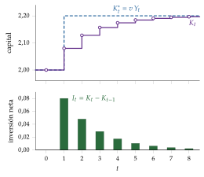
d) Valoración
Supuestos muy restrictivos:
coeficientes fijos: no hay sustitución entre capital y trabajo, así que los precios de los factores no importan;
expectativas estáticas;
la inversión no depende del tipo de interés;
no hay capacidad ociosa: cualquier aumento de la demanda exige invertir en la misma proporción. Y cuando la demanda cae, la inversión bruta no puede ser negativa, así que el acelerador funciona peor a la baja que al alza.
Éxito empírico: la versión flexible ajusta bien los datos, pero que la inversión y la producción se muevan juntas no prueba que la primera dependa de la segunda: el capital también produce. Correlación no es causalidad.
I.3. La síntesis neoclásica: la inversión en el modelo IS-LM
La síntesis no tiene una teoría propia de la inversión: toma la función de Keynes, \(I=\overline{I}-b\,i\), y la mete en la IS, que tiene pendiente negativa porque \(b>0\) [ver tema 3.A.5].
Así, la política monetaria mueve la inversión a través del tipo de interés, tanto más cuanto mayor es \(b\), y la fiscal expansiva la expulsa en parte (crowding-out) al subir el tipo.
Le falta lo mismo que a Keynes: por qué la inversión depende del tipo de interés y a qué ritmo se invierte. Lo resuelve la teoría neoclásica.
I.4. La teoría neoclásica: el modelo de Jorgenson (1963)
a) Idea
En los años 60, la macroeconomía busca microfundamentos para funciones que se habían supuesto ad hoc: Friedman (1957) lo había hecho con el consumo [ver tema 3.A.33].
Jorgenson (1963) hace lo mismo con la inversión: la deriva del problema dinámico de una empresa que maximiza el valor actual de sus beneficios. Su artículo está entre los 20 más influyentes del primer siglo de la American Economic Review. Su resultado central es el coste de uso del capital.
b) Modelo
i) Supuestos
\(N\) empresas idénticas: se trabaja con una empresa representativa. En la empresa basta con que no haya externalidades en la producción y con que los factores se paguen en mercados competitivos.
Competencia perfecta: la empresa es precio-aceptante en el mercado del producto (precio \(P\)), en el del trabajo (salario \(W\)) y en el de bienes de capital (precio \(P^K\)).
Función de producción neoclásica, \(Y_t=F(K_t,L_t)\), con rendimientos constantes a escala, productividades marginales positivas y decrecientes y las condiciones de Inada.5
Tipo de interés \(r\) constante y nivel general de precios constante, de modo que \(r\) es a la vez el tipo nominal y el real.
Sin costes de ajuste: la empresa compra y vende capital al precio \(P^K\) en la cantidad que quiera. El capital se deprecia a la tasa \(\delta\).
ii) Desarrollo
La empresa elige el trabajo y la inversión para maximizar el valor actual de sus beneficios: \[\begin{array}{rl}\displaystyle \max_{\{L_t,\,I_t\}} & \displaystyle \int_0^{\infty}e^{-r\,t}\left[P_t\,F(K_t,L_t)-W_t\,L_t-P^K_t\,I_t\right]dt \\ \text{s.a.} & \dot K_t=I_t-\delta K_t \\ & K_0\ \text{dado}\end{array}\tag{3}\] El trabajo y la inversión son las variables de control; el capital, la variable de estado.
Se resuelve con el hamiltoniano en valor corriente, \[\mathcal{H}_t=P_t\,F(K_t,L_t)-W_t\,L_t-P^K_t\,I_t+\lambda_t\,(I_t-\delta K_t),\] donde \(\lambda_t\) es el precio sombra del capital: lo que vale para la empresa, en \(t\), una unidad más de capital instalado [ver tema 3.A.29]. Las condiciones de primer orden (anexo B) dicen 3 cosas:
se contrata trabajo hasta que el valor de su producto marginal iguala el salario, \(P\,F_L=W\);
se invierte hasta que una unidad más de capital vale lo que cuesta comprarla, \(\lambda_t=P^K_t\);
el capital rinde lo mismo que su coste de oportunidad. Juntando las dos últimas, se demanda capital hasta que el valor de su producto marginal iguala su coste de uso:
\[P\,F_K(K^*,L)=c_K\equiv P^K\left(r+\delta-\frac{\dot P^K}{P^K}\right)\tag{4}\]
El coste de uso \(c_K\) es lo que cuesta, por unidad de tiempo, tener una unidad de capital. Tiene 3 componentes:
\(P^K r\), el coste de oportunidad: el interés al que se renuncia por tener la máquina en vez de venderla y prestar el dinero. Cuanto mayor es el tipo de interés, menos capital se desea;
\(P^K\delta\), la depreciación: lo que la máquina se desgasta;
\(-\dot P^K\), la ganancia o pérdida de capital: si el precio de las máquinas sube, tenerlas sale más barato, porque su valor de reventa crece.
Es como si la empresa se alquilara el capital a sí misma al precio \(c_K\). Con rendimientos constantes, la condición solo fija la relación capital-trabajo; Jorgenson cierra el modelo tomando la producción como dada. Con \(F=K^{\alpha}L^{1-\alpha}\), \(P\,F_K=\alpha\,P\,Y/K\) y \[K^*=\frac{\alpha\,P\,Y}{c_K}:\] el capital deseado crece con la producción y cae con el coste de uso (gráfico 4).
La inversión es el paso del capital que se tiene al deseado, más la reposición: \(I_t=K^*_t-K_{t-1}+\delta K_{t-1}\). Como el ajuste no es instantáneo, Jorgenson lo reparte en el tiempo con retardos distribuidos, como en el acelerador flexible.
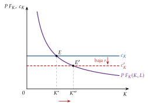
Fuente: elaboración propia a partir de Jorgenson (1963).
iii) Implicaciones de política económica
Política monetaria: eficaz, porque el tipo de interés entra en el coste de uso: una bajada de \(r\) baja \(c_K\) y aumenta \(K^*\).
Política fiscal: ambigua.
Un aumento del gasto financiado con deuda sube el tipo de interés y encarece el capital.
Un incentivo fiscal a la inversión lo abarata. Con un impuesto de sociedades al tipo \(t\), una desgravación de una fracción \(\theta\) del precio de cada bien de capital y unas amortizaciones fiscales que valen, en valor actual, \(z\) por euro invertido, el coste de uso (con \(P^K\) constante) es \[c_K=P^K\,(r+\delta)\,\frac{(1-\theta)(1-t\,z)}{1-t}.\] Si la inversión se puede amortizar de inmediato (\(z=1\)) y no hay desgravación, el impuesto no altera el coste de uso: es neutral [ver tema 4.B.10].6
c) Valoración
Es una teoría del capital deseado, no de la inversión. Si el coste de uso baja de golpe, \(K^*\) salta, y como \(I_t=\dot K_t+\delta K_t\), la inversión sería infinita en ese instante (y nula después). Una demanda de inversión no puede ser así: la limita la capacidad de producir bienes de capital. Los retardos de Jorgenson son ad hoc, como los del acelerador.
Solo importan las variables de hoy: como ajustar el capital no cuesta, a la empresa no le importa el coste de uso de mañana. En la realidad, una subida de tipos anunciada para el año próximo frena hoy la inversión.
Si ajustar el capital deprisa es más caro que hacerlo despacio, la empresa mira al futuro y reparte la inversión en el tiempo.
Recapitulación: Keynes y el acelerador dan funciones de inversión sin optimización; Jorgenson deriva el capital deseado de la maximización del beneficio y lo resume en el coste de uso, pero no explica el ritmo de la inversión ni por qué la empresa mira al futuro. Una vez estudiados los antecedentes, pasamos a un modelo en el que ajustar el capital cuesta: el de la q.
II. Costes de ajuste: el modelo de la q
En el cante (9′30″): el modelo (4′30″), con el problema escrito una vez con su restricción, las 2 condiciones (6), que sirven hasta el final del bloque, y el diagrama de fases del gráfico 6 por capas (ejes, \(\dot K=0\), \(\dot q=0\), flechas, senda de silla); las implicaciones (3′), con solo el aumento permanente de la demanda dibujado sobre el mismo diagrama (gráfico 7) y el resto de palabra, subrayando que la desgravación temporal anima más la inversión que la permanente; la evidencia y la valoración (2′), con la q media en una línea. Las condiciones de primer orden, la versión con depreciación y la igualdad de la q media y la marginal, paso a paso, están en el anexo C.
Conclusión anticipada: con costes de ajuste convexos, la empresa invierte poco a poco y mira al futuro. Toda la información que necesita se resume en una variable, la q: el valor de una unidad más de capital instalado. Se invierte si \(q>1\). Por eso los cambios que se esperan duraderos mueven más la inversión que los transitorios, y una desgravación temporal la adelanta.
Nexo: una vez visto que el capital deseado de Jorgenson no da una senda de inversión, pasamos a un modelo en el que ajustar el capital cuesta, y cuesta más cuanto más deprisa se hace.
II.1. El modelo
a) Idea
Instalar una máquina cuesta más que comprarla: hay que montarla, parar la producción y formar a los trabajadores. Son costes de ajuste internos, crecientes en el ritmo de inversión. Los costes de ajuste externos aparecen cuando la inversión de todas las empresas sube el precio de los bienes de capital, como en la eficiencia marginal de la inversión de Lerner. Aquí se estudian los internos; con los externos el análisis sería parecido.
Tobin (1969) propuso que la inversión depende de la q, el cociente entre el valor de mercado del capital instalado y su coste de reposición, en un modelo de equilibrio general de los activos sin costes de ajuste. Abel (1982) y Hayashi (1982), con la aplicación fiscal de Summers (1981), unen las dos ideas: la q es el precio sombra del capital en un modelo con costes de ajuste.
Seguimos la presentación de Romer (2019, cap. 9), analítica y gráficos.7
b) Modelo
i) Supuestos
\(N\) empresas idénticas y competitivas. \(K\) es el capital de la industria y \(\kappa\) el de cada empresa.8 Como son idénticas, \(K=N\kappa\).
El beneficio de cada empresa, antes de los costes de la inversión, es proporcional a su capital: \(B(K)\,\kappa\), con \(B'(K)<0\).9 Para la empresa, \(B(K)\) es también su beneficio marginal: lo que le aporta una unidad más de capital.
Costes de ajuste convexos: invertir \(I\) cuesta \(I\), el precio de los bienes de capital, más un coste de ajuste \(\Phi({I})\) convexo y mínimo en cero (gráfico 5): \[\Phi(0)=\Phi'(0)=0,\qquad \Phi''(I)>0.\] Por ejemplo, \(\Phi({I})=\tfrac{\phi}{2}\,I^2\): duplicar el ritmo de inversión cuadruplica su coste de ajuste, así que compensa repartirla en el tiempo.10
Precio del capital igual a 1, sin depreciación (\(\dot\kappa=I\)) y tipo de interés \(r\) constante.
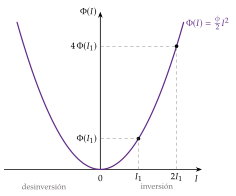
Fuente: elaboración propia a partir de Romer (2019, cap. 9).
ii) Desarrollo
La empresa elige la senda de inversión que maximiza su valor: \[\begin{array}{rl}\displaystyle \max_{\{I_t\}} & \displaystyle \int_0^{\infty}e^{-r\,t}\left[B(K_t)\,\kappa_t-I_t-\Phi(I_t)\right]dt \\ \text{s.a.} & \dot\kappa_t=I_t \\ & \kappa_0\ \text{dado}\end{array}\tag{5}\]
Con el hamiltoniano en valor corriente, \[\mathcal{H}_t=B(K_t)\,\kappa_t-I_t-\Phi(I_t)+q_t\,I_t,\] el coestado \(q_t\) es el precio sombra del capital: lo que vale en \(t\) una unidad más de capital instalado. Es el mismo papel que \(\lambda_t\) en el modelo de Jorgenson. Las condiciones de primer orden son (anexo C):
\[q_t=1+\Phi'(I_t),\qquad r\,q_t=B(K_t)+\dot q_t\tag{6}\]
más la de transversalidad, \(\lim_{t\to\infty}e^{-r\,t}q_t\,\kappa_t=0\).
Primera condición: cuánto se invierte. Se invierte hasta que el valor de una unidad más de capital, \(q\), iguala lo que cuesta comprarla e instalarla, \(1+\Phi'({I})\). Despejando, \(I_t=\Phi'^{-1}(q_t-1)\), donde \(\Phi'^{-1}\) es la función inversa del coste marginal (no \(1/\Phi'\)). Para la industria, \[\dot K_t=N\,\Phi'^{-1}(q_t-1)\equiv f(q_t),\qquad f(1)=0,\quad f'>0.\]
Con el coste cuadrático, \(I_t=(q_t-1)/\phi\): la inversión es creciente en \(q\), y tanto más sensible cuanto más barato es ajustar.
Si \(q>1\), el capital crece; si \(q<1\), decrece. El lugar \(\dot K=0\) es la recta horizontal \(q=1\): el capital instalado vale lo que cuesta reponerlo.
Segunda condición: cuánto vale el capital. Es una condición de arbitraje entre activos: tener una unidad de capital rinde su beneficio, \(B(K)\), más su revalorización, \(\dot q\), y eso tiene que igualar el interés al que se renuncia por no venderla y prestar su valor, \(r\,q\). Resolviéndola hacia delante con la condición de transversalidad, \[q_t=\int_t^{\infty}e^{-r\,(s-t)}\,B(K_s)\,ds:\] \(q\) es el valor actual de todos los beneficios futuros de una unidad de capital. Por eso la inversión mira al futuro: lo que se espera ganar mañana cuenta hoy.
El lugar \(\dot q=0\) es \(q=B(K)/r\), decreciente en \(K\).
Por encima de él, \(\dot q=r\,q-B(K)>0\) y \(q\) sube; por debajo, baja.
El diagrama de fases. Las 2 condiciones forman un sistema de ecuaciones diferenciales en \((K,q)\) (gráfico 6).
El equilibrio \(E\) tiene \(q=1\) y \(B(K^*)=r\): es la regla de Jorgenson, con un coste de uso igual a \(r\) porque el precio del capital es 1 y no hay depreciación. En él, el valor de mercado y el coste de reposición del capital coinciden, y nadie quiere cambiar su capital.
Es un punto de silla. \(K\) es una variable predeterminada, que solo cambia poco a poco; \(q\) es una variable que mira al futuro y salta con las noticias. La transversalidad descarta las sendas explosivas (burbujas en el valor del capital), así que \(q\) salta a la única senda que lleva a \(E\), la senda de silla, y \(K\) y \(q\) convergen por ella.11
Es el mismo problema que resuelve la empresa con su plantilla cuando contratar y despedir cuesta: allí el precio sombra de un trabajador más es la q del trabajo [ver tema 3.A.26].
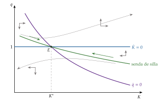
Fuente: elaboración propia a partir de Romer (2019, cap. 9).
Dos vídeos del canal Understand Economics @Berkeley desarrollan el modelo paso a paso: «Investment 1: Model with internal adjustment costs», https://youtu.
II.2. Implicaciones de política económica
El modelo permite analizar cómo responde la inversión a cambios en la demanda, en el tipo de interés y en los impuestos, según se esperen permanentes o temporales. Basta ver qué lugar se mueve:
\(\dot K=0\) está en \(q=1\), el precio de una unidad de capital: lo mueven las ayudas a la compra de capital;
\(\dot q=0\) está en \(q=B(K)/r\): lo mueven la demanda (que cambia \(B\)) y el tipo de interés.
La regla general: el capital solo cambia poco a poco y la \(q\) salta en el momento de la noticia. Si el cambio es permanente, salta a la nueva senda de silla; si es temporal, salta menos, lo justo para llegar a la senda de silla antigua cuando el cambio termine.
Aumento de la demanda (fluctuaciones de la producción)
Una mayor demanda del producto sube su precio y, con el mismo capital, el beneficio por unidad de capital, \(B(K)\): el lugar \(\dot q=0\) se desplaza hacia arriba.
Aumento permanente (gráfico 7): como el capital no puede ajustarse al instante, el capital instalado rinde más y su valor, \(q\), salta hasta la nueva senda de silla, en el punto \(A\). Con \(q>1\) la inversión aumenta y el capital crece; al crecer, aumenta la producción, cae el precio, bajan \(B(K)\) y \(q\), y la economía converge al nuevo equilibrio \(E'\), con más capital y \(q=1\). Un aumento permanente de la demanda provoca un aumento temporal de la inversión: sube de golpe y vuelve poco a poco a cero.
Aumento temporal, que dura hasta \(T\) (gráfico 8): \(q\) sube menos, hasta \(A\), por debajo de la nueva senda, porque las empresas saben que el capital que instalen sobrará más adelante y que desinvertir también cuesta. La inversión es menor que con el aumento permanente. \(K\) y \(q\) se mueven hasta \(B\), sobre la senda de silla antigua, al que llegan en \(T\); la trayectoria cruza la recta \(q=1\) antes de \(T\), así que el capital empieza a caer antes de que la demanda vuelva a su nivel. Después, la economía vuelve a \(E\) por la senda antigua.
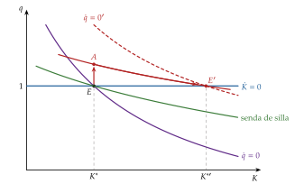
Fuente: elaboración propia a partir de Romer (2019, cap. 9).
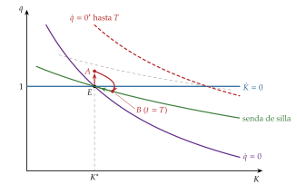
Fuente: elaboración propia a partir de Romer (2019, cap. 9).
Bajada del tipo de interés (política monetaria)
Una bajada de \(r\) sube el valor actual de los beneficios futuros: el lugar \(\dot q=0\), \(q=B(K)/r\), sube y gira, más inclinado.12
Bajada permanente (gráfico 9): los efectos son los del aumento permanente de la demanda: \(q\) salta a la nueva senda, la inversión sube de golpe y el capital crece hasta un equilibrio con más capital, donde \(B(K^*)\) es igual al nuevo tipo.
Bajada temporal (gráfico 10): \(q\) salta menos y la inversión responde menos, como en el aumento temporal de la demanda.
La inversión responde a toda la senda futura de los tipos, no solo al de hoy: a los tipos largos y a lo que se espera de la política monetaria. Es el canal de la q de la transmisión de la política monetaria: un tipo más bajo sube el valor de las acciones, la \(q\) y la inversión [ver tema 3.A.37].
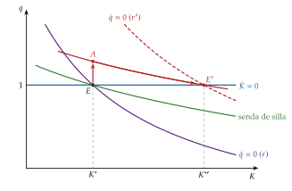
Fuente: elaboración propia a partir de Romer (2019, cap. 9).
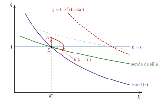
Fuente: elaboración propia a partir de Romer (2019, cap. 9).
Desgravación a la inversión (política fiscal)
Si el Estado devuelve una fracción \(\theta\) del precio de cada bien de capital nuevo, comprar una unidad cuesta \(1-\theta\) y la primera condición pasa a ser \(q_t=1-\theta+\Phi'(I_t)\): el lugar \(\dot K=0\) baja a \(q=1-\theta\). La desgravación no cambia el lugar \(\dot q=0\).
Desgravación permanente (gráfico 11):
el capital deseado aumenta: en el nuevo equilibrio \(E'\), \(B(K)=r\,(1-\theta)\);
\(q\) cae de golpe hasta la nueva senda de silla, porque el capital ya instalado no se beneficia de la desgravación y tendrá que competir con el nuevo, más barato;
pero cae menos que el umbral, que baja a \(1-\theta\): como \(q\) queda por encima de \(1-\theta\), la inversión aumenta y el capital crece hasta \(E'\).
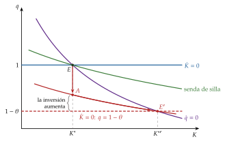
Fuente: elaboración propia a partir de Romer (2019, 439-40).
Desgravación temporal, hasta \(T\) (gráfico 12): \(q\) cae menos que con la permanente, porque el capital instalado sufrirá menos competencia futura, así que la distancia entre \(q\) y \(1-\theta\), y con ella la inversión, es mayor que con la desgravación permanente. Además, \(q\) sube a medida que se acerca \(T\): las empresas adelantan la inversión para aprovechar la ayuda antes de que desaparezca. Cuando se retira, la inversión pasa a ser negativa y el capital vuelve poco a poco al equilibrio inicial.
Lección de política: una desgravación temporal anima más la inversión a corto plazo que una permanente, porque la adelanta; la permanente aumenta más el capital a largo plazo. Por eso los incentivos fiscales temporales sirven como política anticíclica, siempre que su final sea creíble (apartado III.5).
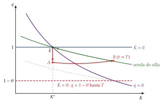
Fuente: elaboración propia a partir de Romer (2019, 439-40).
II.3. Evidencia empírica y valoración
La q marginal y la q media
La \(q\) del modelo es la q marginal: lo que una unidad más de capital añade al valor de la empresa, dividido por su precio de compra (aquí, 1). Es la que decide la inversión, pero no se observa.
Lo que se observa en la bolsa es la q media de Tobin (1969), el cociente entre el valor de mercado de la empresa, \(V\), y el coste de reposición de su capital: \[q^{\mathrm{media}}\equiv\frac{V}{P^K\,\kappa}.\]
Hayashi (1982) demuestra que las 2 coinciden si la empresa es precio-aceptante y las funciones de producción y de coste de ajuste son homogéneas de grado 1, es decir, si el coste de ajuste depende de la tasa de inversión, \(\Phi({I},\kappa)=\kappa\,\varphi(I/\kappa)\). La empresa es entonces una réplica a escala de sí misma y su valor es \(q\,\kappa\) (anexo C).13
Con el coste cuadrático en la tasa de inversión, \(\varphi(I/\kappa)=\tfrac{\phi}{2}(I/\kappa)^2\), la primera condición da una ecuación que se puede estimar: \[\frac{I_t}{\kappa_t}=\frac{1}{\phi}\,(q_t-1).\]
Evidencia empírica
Summers (1981), con datos anuales de las empresas de Estados Unidos entre 1931 y 1978, estima un coeficiente de \(q\) de solo 0,03. Los costes de ajuste implícitos serían enormes: el 65 % del valor del capital con una tasa de inversión del 20 %, y el capital tardaría más de 10 años en recorrer la mitad del camino hacia su nuevo equilibrio. Pero la estimación está sesgada a la baja por 2 motivos:
error de medida: la q media de la bolsa mide con ruido la q marginal;
simultaneidad: cuando la demanda de inversión es alta, suben los tipos de interés y baja la \(q\).
Cummins, Hassett y Hubbard (1994) sortean el problema con las grandes reformas fiscales de Estados Unidos (1962, 1971, 1981 y 1986), que cambiaron el coste del capital de forma muy distinta según el activo y el sector: un experimento natural. Con la variación de la \(q\) que solo se debe a ellas, el coeficiente sube a 0,5 y los costes de ajuste implícitos bajan a un razonable 4 % del valor del capital.
La q calculada con el mercado de bonos o incluyendo el capital intangible explica la inversión mucho mejor que la de la bolsa.
La brecha de inversión: desde comienzos de los 2000, la inversión en Estados Unidos ha sido baja para la q que había. Gutiérrez y Philippon (2017) la atribuyen sobre todo a la menor competencia (con poder de mercado, una q alta refleja rentas, no oportunidades de inversión), al peso de los intangibles, que se miden mal, y al cortoplacismo en la gestión.
Aun con estas mejoras, \(q\) explica poco de la inversión, y variables corrientes como el flujo de caja añaden poder explicativo, lo que apunta a las imperfecciones financieras (apartado III.4).
Para profundizar. La aplicación empírica de la q, con los estudios de Summers y de Cummins, Hassett y Hubbard, está en Romer (2019, 441-44). Sobre la brecha de inversión y la competencia en Estados Unidos: «Are anti-competitive firms killing American innovation?», The Economist, 12/12/2019, https://www.
Valoración
Ventajas:
es la primera teoría completa de la inversión: sale de la optimización, explica el ajuste gradual del capital y mira al futuro;
une la bolsa con la economía real: con una sola variable, \(q\), resume todo lo que la empresa necesita saber, y es la base del canal de la q de la política monetaria [ver tema 3.A.37];
distingue entre medidas permanentes y temporales, lo que da criterios para diseñar los incentivos fiscales.
Límites:
la q de la bolsa explica poco: la bolsa puede alejarse de los fundamentos, y las empresas invierten según sus beneficios esperados más que según la cotización;
supone costes de ajuste simétricos y convexos, de modo que la empresa invierte un poco cada periodo. Los datos de las plantas muestran lo contrario: largos periodos sin invertir y, de vez en cuando, un gran salto;
supone previsión perfecta, así que no dice nada del efecto de la incertidumbre;
supone que la empresa se financia sin fricciones al tipo \(r\).
Recapitulación: con costes de ajuste convexos, la inversión depende de la \(q\), el valor actual de los beneficios futuros de una unidad de capital; responde más a los cambios duraderos que a los transitorios y se adelanta con las ayudas temporales. Pero el modelo supone que deshacer una inversión cuesta lo mismo que hacerla, que el futuro se conoce y que la financiación no importa. Una vez estudiado el modelo de la q, pasamos a levantar esos 3 supuestos, que son los que pone en cuestión el título: la irreversibilidad, la incertidumbre y la financiación.
III. Extensiones: incertidumbre, irreversibilidad y financiación de la inversión
En el cante (10′): los costes asimétricos y fijos (2′), con la banda de inacción en \(q\), el gráfico 13 por capas y la tabla 1 de palabra; la incertidumbre con costes simétricos (2′), de palabra, con la convexidad del beneficio en una línea; la opción de esperar (3′30″), el corazón del bloque, con la tabla 2 (los números del ejemplo), la regla (8), el gráfico 14 por capas y el refrán «no por mucho madrugar amanece más temprano»; la evidencia de la incertidumbre de política, de palabra, con el gráfico 15 como apoyo; los mercados financieros (1′30″), de palabra, con la pegatina «dinero llama a dinero»; la síntesis (1′), con la tabla 3 de palabra. El umbral \(V^*\) en tiempo continuo está en el anexo D.
Nexo: una vez estudiada la inversión con previsión perfecta, costes de ajuste simétricos y financiación sin fricciones, pasamos a levantar esos 3 supuestos. Los 2 primeros son los que pone en cuestión el título: que deshacer una inversión cuesta lo mismo que hacerla y que la empresa conoce el futuro.
Conclusión anticipada: buena parte del capital es específico de la empresa y se revende mal: la inversión es irreversible. Con irreversibilidad, invertir hoy mata la opción de invertir mañana con más información, y la incertidumbre retrasa la inversión aunque su valor actual neto sea positivo. Si además financiarse fuera cuesta más que con fondos propios, la inversión depende de la riqueza de la empresa. Por eso la política que más ayuda a la inversión es la que reduce la incertidumbre y las fricciones financieras, más que la que retoca su coste.
III.1. Costes de ajuste asimétricos y fijos
a) Idea
En el modelo de la q, deshacer una inversión cuesta lo mismo que hacerla. No es así:
una máquina hecha a medida se revende con un fuerte descuento, porque es específica de la empresa y porque el comprador desconfía de su calidad, como en el mercado de los «limones» de Akerlof [ver tema 3.A.13];
muchas inversiones tienen un coste fijo (parar la planta, rediseñar la línea) que no depende de su tamaño.
Son los costes de ajuste quebrados (lineales, con distinta pendiente a cada lado de cero) y los costes fijos. Explican lo que se ve en las plantas: largos periodos sin invertir y, de vez en cuando, un gran salto.
b) Modelo
i) Supuestos
Los del modelo de la q, salvo el coste de ajuste, que ahora es quebrado: \[\Phi({I})=\begin{cases}\phi_c\,I+\tfrac{\phi}{2}\,I^2 & \text{si } I\geq 0,\\[2pt] -\phi_d\,I+\tfrac{\phi}{2}\,I^2 & \text{si } I<0,\end{cases}\] con \(\phi_c\geq 0\) el coste unitario de comprar e instalar y \(\phi_d\geq 0\) la pérdida por unidad que se vende: el capital se compra a \(1+\phi_c\) y se revende a \(1-\phi_d\). Son las mismas letras que los costes de contratar y de despedir del empleo [ver tema 3.A.26].
Si \(\phi_d=1\), el capital instalado no vale nada fuera de la empresa: la inversión es totalmente irreversible.
ii) Desarrollo
La segunda condición de la q no cambia (\(r\,q=B(K)+\dot q\)). La primera, sí: maximizando el hamiltoniano respecto a \(I\) a cada lado de cero, \[I(q)=\begin{cases}(q-1-\phi_c)/\phi & \text{si } q>1+\phi_c,\\[2pt] 0 & \text{si } 1-\phi_d\leq q\leq 1+\phi_c,\\[2pt] (q-1+\phi_d)/\phi & \text{si } q<1-\phi_d.\end{cases}\]
Entre los 2 umbrales la empresa no hace nada: es la banda de inacción (gráfico 13),
\[1-\phi_d\ \leq\ q\ \leq\ 1+\phi_c\tag{7}\]
Dentro de ella, cambiar el capital cuesta más de lo que vale. Es la misma lógica que la banda del empleo con costes de contratar y despedir, dividida por \(r\) porque aquí se comparan valores y allí flujos [ver tema 3.A.26].
Como en el estado estacionario \(q=B(K)/r\), cualquier capital con \(r\,(1-\phi_d)\leq B(K)\leq r\,(1+\phi_c)\) es un equilibrio: el capital de largo plazo depende de la historia.
Costes fijos: si invertir cuesta \(\Phi_0>0\) sea cual sea el tamaño, la empresa solo ajusta cuando la ganancia lo compensa y, cuando lo hace, ajusta mucho. Deja crecer la distancia entre el capital deseado y el que tiene hasta un umbral y entonces salta hasta un nivel objetivo: es una regla \((S,s)\), como la de las compras de bienes duraderos [ver tema 3.A.33]. La inversión es a saltos (lumpy).
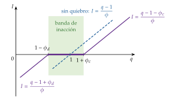
Fuente: elaboración propia a partir de Abel y Eberly (1994) y Romer (2019, cap. 9).
iii) Implicaciones
Los cambios pequeños del tipo de interés o de los impuestos no mueven la inversión de las empresas que están dentro de la banda; los grandes, sí. La respuesta agregada depende de cuántas empresas estén cerca de su umbral: la inversión agregada responde más que proporcionalmente a las perturbaciones grandes y su respuesta depende de la historia reciente.
Con irreversibilidad, la empresa invierte con más cautela si teme que mañana le sobre capital: la forma de los costes importa, sobre todo, cuando el futuro es incierto.
| Costes | \(\Phi({I})\) | Regla | Perturbación permanente | Perturbación transitoria |
|---|---|---|---|---|
| Sin costes (Jorgenson) | \(0\) | \(P\,F_K=c_K\) en cada momento (4) | salto inmediato y completo del capital | sigue a la perturbación |
| Fijos | \(\Phi_0\) si \(I\neq0\) | regla \((S,s)\): ajusta si la ganancia supera \(\Phi_0\) | salto completo o nada | casi siempre nada |
| Lineales | \(\phi_cI\) o \(-\phi_dI\) | banda de inacción (7) | salto hasta el borde | quieto en picos y valles |
| Lineales asimétricos (irreversibilidad) | \(\phi_d>\phi_c\); \(\phi_d=1\) | banda más ancha por el lado de la venta | desinvierte menos | invierte y desinvierte menos |
| Cuadráticos (q) | \(\tfrac{\phi}{2}I^{2}\) | \(q_t=1+\phi I_t\); (6) | gradual; anticipa | amortiguado |
Fuente: elaboración propia a partir de Abel y Eberly (1994) y Romer (2019, 449-53).
c) Evidencia empírica
En las plantas manufactureras de Estados Unidos, una parte grande de la inversión de cada planta se concentra en unos pocos años de picos, con muchos años de inversión casi nula entre ellos.
El modelo que mejor reproduce esos datos combina costes convexos, costes fijos y un descuento en la reventa del capital.
d) Valoración
Abel y Eberly (1994) reúnen en un solo modelo los costes convexos, los quebrados y los fijos: la q sigue resumiendo la decisión, pero la inversión deja de ser una función lineal de ella.
El modelo sigue suponiendo que la empresa conoce el futuro. Con irreversibilidad, lo que de verdad importa es el riesgo de equivocarse, y para eso hay que introducir la incertidumbre.
III.2. La inversión bajo incertidumbre
a) Idea
Hasta aquí la empresa conocía el futuro. En la práctica desconoce la demanda, los precios, los tipos de interés y los impuestos.
La intuición dice que la incertidumbre frena la inversión, pero la teoría muestra que depende de los costes de ajuste: con costes simétricos y convexos, puede incluso aumentarla.
b) Modelo
i) Supuestos
Empresa competitiva y neutral al riesgo, con \(Y=K^{\alpha}L^{1-\alpha}\) y costes de ajuste convexos y simétricos, como en el modelo de la q.
El precio del producto, \(p\), es aleatorio. El capital se elige antes de conocerlo; el trabajo, después, al salario \(w\).
ii) Desarrollo
La inversión sigue dependiendo solo de \(q\), que ahora es un valor esperado: \[q_t=\mathbb{E}_t\left[\int_t^{\infty}e^{-r\,(s-t)}B_s\,ds\right].\]
Como el trabajo se ajusta al precio, el beneficio por unidad de capital es convexo en el precio: \[B(p)=\alpha\,(1-\alpha)^{\frac{1-\alpha}{\alpha}}\,w^{-\frac{1-\alpha}{\alpha}}\,p^{\frac{1}{\alpha}},\qquad \frac{1}{\alpha}>1.\]
Por la desigualdad de Jensen, más dispersión del precio con la misma media eleva \(\mathbb{E}[B(p)]\), eleva \(q\) y eleva la inversión [ver tema 3.A.10].
iii) Implicaciones
La incertidumbre puede aumentar la inversión: con el trabajo flexible, la empresa aprovecha los precios altos (contrata más) y limita las pérdidas con los bajos (contrata menos). Cada máquina se parece a una opción de compra sobre los estados buenos.
c) Extensiones
Caballero (1991) muestra que el signo depende de 2 cosas: de la asimetría de los costes de ajuste y del grado de competencia. Con competencia perfecta y rendimientos constantes, la asimetría apenas importa y el efecto es positivo; con poder de mercado o rendimientos decrecientes y costes asimétricos, la incertidumbre reduce la inversión.
d) Valoración
El resultado descansa en que deshacer la inversión es tan barato como hacerla. Si el capital no se puede revender, la empresa teme quedarse con capital de sobra en los estados malos, y la incertidumbre actúa en sentido contrario. Es la teoría de la opción de esperar.
III.3. La irreversibilidad de la inversión: la opción de esperar
a) Idea
Si la inversión es irreversible y se puede aplazar, la oportunidad de invertir es una opción real: el derecho, pero no la obligación, de pagar un coste hundido \(I\) a cambio de un proyecto que vale \(V\). Invertir es ejercer la opción y la extingue: se renuncia a esperar a saber más. Ese valor perdido es un coste de oportunidad que la regla del valor actual neto (VAN) no ve.
La idea tiene antecedentes en Arrow (1968) y en el «efecto irreversibilidad» de Henry (1974). Bernanke (1983) la aplica al ciclo, McDonald y Siegel (1986) valoran la espera en tiempo continuo y Pindyck (1991) y Dixit y Pindyck (1994) la convierten en una teoría de la inversión.
b) Modelo
i) Supuestos
Incertidumbre: un proyecto produce una unidad al año para siempre. Hoy el precio es \(p_0\); desde el año 1 será \(p^{\mathrm A}\) con probabilidad \(\pi\) o \(p^{\mathrm B}<p^{\mathrm A}\) con probabilidad \(1-\pi\), y ya no cambiará.14
Irreversibilidad: el coste \(I\) es hundido; no se recupera.
Posibilidad de esperar: la empresa puede invertir hoy o dentro de un año, cuando ya conoce el precio. Es neutral al riesgo y descuenta al tipo \(r\).
ii) Desarrollo
Valor del proyecto en el año 1 (incluida la producción de ese año), según el estado: \(V^{\mathrm A}=p^{\mathrm A}(1+r)/r\) y \(V^{\mathrm B}=p^{\mathrm B}(1+r)/r\). Su valor hoy, si se invierte hoy: \(V_0=p_0+\left[\pi V^{\mathrm A}+(1-\pi)V^{\mathrm B}\right]/(1+r)\).
Invertir hoy: \(\mathrm{VAN}_0=V_0-I\).
Esperar: solo se invierte si sale el estado alto. Con \(V^{\mathrm B}<I<V^{\mathrm A}\), \[\mathrm{VAN}_{\mathrm{esperar}}=\frac{\pi\max(V^{\mathrm A}-I,0)+(1-\pi)\max(V^{\mathrm B}-I,0)}{1+r}=\frac{\pi\,(V^{\mathrm A}-I)}{1+r}.\]
Regla: se invierte hoy solo si
\[V_0-I\ \geq\ \frac{\pi\,(V^{\mathrm A}-I)}{1+r}\tag{8}\]
Ya no basta con \(V_0\geq I\): el proyecto tiene que cubrir su coste más el valor de la opción de esperar a la que se renuncia. «No por mucho madrugar amanece más temprano»: invertir antes no compensa si esperar trae información.
El principio de las malas noticias. Restando los 2 lados de la regla, \[\mathrm{VAN}_0-\mathrm{VAN}_{\mathrm{esperar}}=\underbrace{\left[p_0-\frac{r\,I}{1+r}\right]}_{\text{coste de esperar}}-\underbrace{\frac{(1-\pi)\,(I-V^{\mathrm B})}{1+r}}_{\text{pérdida que se evita}}.\] Esperar cuesta un año de producción (menos los intereses que se ahorran al aplazar el pago) y evita la pérdida del estado malo. \(V^{\mathrm A}\) no aparece: lo que frena la inversión es la posibilidad de malas noticias.
Un ejemplo. Una fábrica cuesta \(I=1.600\); el precio de hoy es \(p_0=200\) y desde el año próximo será 300 o 100 con la misma probabilidad (\(\pi=0{,}5\)); \(r=10\) % (tabla 2).
Invertir hoy: \(V_0=200+(0{,}5\cdot 3.300+0{,}5\cdot 1.100)/1{,}1=2.200\) y \(\mathrm{VAN}_0=600>0\). La regla del VAN dice: adelante.
Esperar: \(\mathrm{VAN}_{\mathrm{esperar}}=0{,}5\cdot(3.300-1.600)/1{,}1\approx 773\). Esperar vale unos 173 más.
En la descomposición: esperar cuesta \(200-0{,}1\cdot 1.600/1{,}1\approx 55\) y evita una pérdida esperada de \(0{,}5\cdot(1.600-1.100)/1{,}1\approx 227\).
Invertir hoy solo compensa si \(I\leq 1.283\): el umbral está muy por debajo del coste que haría nulo el VAN (\(I=2.200\)).
Si la incertidumbre aumenta con la misma media (precio de 350 o 50), \(V_0\) no cambia, pero esperar pasa a valer \(0{,}5\cdot(3.850-1.600)/1{,}1\approx 1.023\): más incertidumbre, más valor de esperar.
En tiempo continuo (anexo D), si el valor del proyecto sigue un movimiento browniano geométrico con volatilidad \(\sigma\), el valor de la oportunidad de invertir, \(O(V)\), es convexo y toca la recta \(V-I\) en el umbral (gráfico 14) \[V^*=\frac{\beta_1}{\beta_1-1}\,I>I,\tag{9}\] con \(\beta_1>1\) decreciente en \(\sigma\): más volatilidad, umbral más alto.
| Hoy | Año 1, estado alto (\(\pi=0{,}5\)) | Año 1, estado bajo (\(1-\pi=0{,}5\)) | |
|---|---|---|---|
| Precio | 200 | 300 | 100 |
| Valor del proyecto | \(V_0=2.200\) | \(V^{\mathrm A}=3.300\) | \(V^{\mathrm B}=1.100\) |
| Invertir hoy | \(\mathrm{VAN}_0=2.200-1.600=600\) | ||
| Esperar | — | invierte: \(3.300-1.600=1.700\) | no invierte: \(0\) |
| \(\mathrm{VAN}_{\mathrm{esperar}}=0{,}5\cdot 1.700/1{,}1\approx 773>600\) | |||
Fuente: elaboración propia a partir de Pindyck (1991) y Dixit y Pindyck (1994, cap. 2); \(I=1.600\), \(r=10\) %.
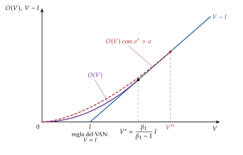
Fuente: elaboración propia a partir de Dixit y Pindyck (1994, cap. 5).
iii) Implicaciones
Las reglas del VAN (\(V\geq I\)) y de Jorgenson (\(P\,F_K=c_K\)) fallan con irreversibilidad: el rendimiento que se exige al capital incluye el valor de la opción a la que se renuncia, que puede ser grande. Un VAN positivo no basta.
Más incertidumbre, más espera: la incertidumbre frena la inversión aunque los proyectos sean rentables en media.
Mientras la incertidumbre sea alta, bajar el tipo de interés mueve poco la inversión: el obstáculo no es el coste del capital, sino el valor de esperar. Lo que más ayuda es reducir la incertidumbre, sobre todo la que crea la propia política económica (apartado III.5).
c) Extensiones
Otras opciones reales: ampliar, abandonar (que hace la inversión menos irreversible y la anima) o invertir por fases. La opción de esperar es una opción de compra americana sobre el proyecto [ver tema 3.B.25], y su valoración forma parte de la de los proyectos de la empresa [ver tema 3.B.2].
Competencia: si esperar permite que un competidor se adelante, el valor de esperar se reduce y la inversión se acelera.
Bienes de consumo duradero: su compra es en parte irreversible y la incertidumbre también la retrasa [ver tema 3.A.33].
Histéresis: Dixit (1989) aplica la misma lógica a entrar en un mercado y salir de él. La empresa entra solo cuando el precio supera un umbral por encima de su coste medio y sale solo cuando cae por debajo de otro umbral por debajo de su coste variable medio; entre los 2, hace lo que hacía. Una perturbación transitoria grande deja así efectos permanentes: la apreciación del dólar de los años 80 atrajo a exportadores extranjeros que se quedaron en Estados Unidos cuando el dólar volvió.15
d) Evidencia empírica
Con parámetros razonables, McDonald y Siegel (1986) hallan que conviene esperar hasta que el valor del proyecto doble su coste.
En empresas italianas, la incertidumbre sobre la demanda reduce la respuesta de la inversión a la demanda esperada, más donde el capital es más difícil de revender.
Esperar y ver: tras un aumento brusco de la incertidumbre, las empresas congelan la inversión y la contratación; la actividad cae con fuerza durante unos meses, rebota cuando la incertidumbre se disipa y llega a pasarse.
Efecto cautela: con más incertidumbre, la inversión responde menos a la demanda. Los estímulos pierden fuerza justo cuando más falta hacen.
Incertidumbre de política económica: Baker, Bloom y Davis (2016) la miden con la frecuencia con que la prensa la menciona. Sus picos preceden a caídas de la inversión, la producción y el empleo, y la inversión cae más en las empresas más expuestas a la política. Las empresas recortan su inversión de media un 4,8 % en los años de elecciones.
España: con un índice propio construido con 7 periódicos, los aumentos de la incertidumbre de política económica reducen de forma significativa el PIB, el consumo y la inversión privada. El índice tuvo sus máximos en mayo de 2020, con la COVID, y en junio de 2012, con la crisis de la deuda; en 2025 se mantuvo, de media, un 77 % por encima de su nivel histórico (gráfico 15). En abril de 2025, con los aranceles de Estados Unidos, este índice llegó a 212, por debajo de los máximos de 2020 y 2012, mientras que el de Baker, Bloom y Davis (2016), que con otra metodología solo lee 2 periódicos, marcó entonces el récord de su serie para España.
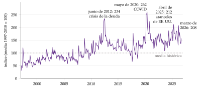
e) Valoración
Explica por qué la inversión es más sensible a la incertidumbre y menos al tipo de interés de lo que dice la teoría neoclásica, y da contenido a la intuición de Keynes.
Pero es de equilibrio parcial, supone probabilidades conocidas (riesgo, no la incertidumbre de Knight y Keynes) y su efecto sobre el capital a largo plazo es ambiguo: la irreversibilidad frena la inversión en los buenos tiempos, pero también impide deshacerse del capital en los malos.
En los datos cuesta separar la causa del efecto: la incertidumbre sube en las recesiones, y las recesiones también la generan.
III.4. Mercados financieros e inversión
a) Idea
Hasta aquí la empresa se financiaba al tipo \(r\), con fondos propios o ajenos. Es el teorema de Modigliani y Miller (1958): con mercados perfectos, el valor de la empresa no depende de cómo se financie, y la decisión de invertir se separa de la de financiarse [ver tema 3.B.3].
Pero el que presta sabe menos que el que pide prestado. Con información asimétrica y costes de agencia, la financiación externa es más cara que la interna, y la inversión depende de los fondos propios de la empresa.
b) Modelo
La jerarquía financiera. Si la dirección sabe más que el mercado, emitir acciones es una mala señal (se emiten cuando están caras), así que se venden con descuento y la empresa renuncia a proyectos con VAN positivo para no emitirlas. Las empresas se financian primero con beneficios retenidos, después con deuda y por último con acciones. La deuda también tiene sus problemas: los bancos racionan el crédito en vez de subir el tipo [ver tema 3.A.13].
La prima de financiación externa. La empresa tiene una riqueza neta \(\mathrm{RN}\). Hasta \(\mathrm{RN}\) invierte al coste \(r\); por encima, paga una prima que crece con su endeudamiento. La oferta de fondos tiene un escalón (gráfico 16): si la demanda de inversión la corta en el tramo creciente, más riqueza neta, más inversión, aunque la \(q\) no cambie. «Dinero llama a dinero»: quien tiene beneficios y garantías se financia más barato e invierte más.
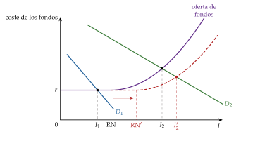
c) Evidencia empírica
Fazzari, Hubbard y Petersen (1988) separan las empresas según los dividendos que reparten. Con \(q\) dada, la inversión de las que reparten poco (las que, en principio, no consiguen fondos fuera) es casi el doble de sensible al flujo de caja (0,46 frente a 0,23).
Kaplan y Zingales (1997) lo discuten: al leer las cuentas de esas empresas, las menos restringidas son las más sensibles, y en teoría la sensibilidad no tiene por qué crecer con la restricción. Además, el flujo de caja puede recoger la parte de la q marginal que la bolsa mide mal.
Un experimento natural lo aclara: tras la caída del petróleo de 1986, las petroleras recortaron la inversión de sus filiales no petroleras, cuyas oportunidades no habían cambiado. Los fondos internos importan.
d) Extensiones: el acelerador financiero
Bernanke y Gertler (1989) llevan la idea a la macroeconomía: en una recesión cae la riqueza neta de las empresas, sube la prima de financiación externa y la inversión cae más. Las fricciones financieras amplifican y prolongan el ciclo.
Bernanke, Gertler y Gilchrist (1999) lo meten en un modelo de equilibrio general: el rendimiento que se exige al capital es el tipo sin riesgo más una prima que baja con la riqueza neta en relación con el valor del capital, \[\mathbb{E}_t\left[R^K_{t+1}\right]=s\left(\frac{\mathrm{RN}_{t+1}}{q_t\,K_{t+1}}\right)R_{t+1},\qquad s'(\cdot)<0.\] Una caída de \(q\) reduce la riqueza neta, sube la prima, frena la inversión y vuelve a bajar \(q\): es el acelerador financiero.16
Kiyotaki y Moore (1997) llegan a lo mismo con las garantías: si se presta contra el valor de los activos, su caída restringe el crédito y vuelve a bajar su precio.
Las empresas pequeñas, más dependientes del crédito bancario, son las que más sufren una subida de tipos: es el canal del crédito de la política monetaria [ver tema 3.A.37] y una de las bases del ciclo financiero [ver tema 3.A.42].
e) Valoración
Explica que la inversión dependa del flujo de caja y que las crisis financieras tengan efectos tan hondos sobre ella. Cuánto pesa la financiación frente a los fundamentos sigue en discusión; pesa más en las empresas pequeñas y jóvenes.
III.5. Implicaciones de política económica: síntesis
Nexo: recorridas las teorías, reunimos lo que dicen sobre la política económica (tabla 3).
Estabilidad y credibilidad, antes que incentivos. Con irreversibilidad, la incertidumbre sobre los impuestos, los tipos o la regulación pesa más que su nivel. Una reforma que el mercado cree reversible funciona como un impuesto sobre la inversión: las empresas esperan a ver si dura. La estabilidad hay que entenderla en sentido amplio: precios, tipos de interés y de cambio, reglas fiscales, seguridad jurídica y respeto de los derechos de propiedad.
Medidas temporales y permanentes. Una rebaja permanente del coste de uso aumenta el capital a largo plazo; una temporal, sobre todo, adelanta la inversión (apartado II.2). Por eso los incentivos temporales sirven como política anticíclica: en Estados Unidos, la amortización acelerada de 2001-2004 y 2008-2010 aumentó la inversión en los bienes que podían acogerse a ella, sobre todo en las empresas pequeñas. Pero solo si su final es creíble: si las empresas esperan una prórroga, esperan.
Política monetaria. Actúa por el coste de uso, por la \(q\) (el precio de las acciones) y por la riqueza neta de las empresas (el canal del crédito) [ver tema 3.A.37]. Pierde fuerza cuando la incertidumbre es alta y las empresas están dentro de su banda de inacción: entonces ayuda más guiar las expectativas que mover el tipo.
Política fiscal. El impuesto de sociedades es neutral si la inversión se puede deducir de inmediato; si no, encarece el capital (apartado I.4) [ver tema 4.B.10]. La inversión pública puede complementar a la privada [ver tema 3.A.38].
Política financiera. Los avales y las líneas de liquidez para empresas solventes con problemas transitorios, como los de la pandemia, evitan que una perturbación pasajera destruya capital de forma permanente: en el modelo de la q el capital vuelve al equilibrio, pero una empresa que quiebra no vuelve. La política macroprudencial modera el acelerador financiero.
| Teoría | Determinante | Política monetaria | Política fiscal | Mensaje |
|---|---|---|---|---|
| Keynes | animal spirits, EMgK | poco eficaz | eficaz (inversión pública) | sostener la confianza |
| Acelerador | \(\Delta Y\) | nula | eficaz | gestionar la demanda |
| Jorgenson | coste de uso \(c_K\) | eficaz | ambigua | neutralidad del impuesto |
| q de Tobin | \(q\) esperada | eficaz si es duradera | las temporales adelantan | tipos largos y anuncios creíbles |
| Incertidumbre e irreversibilidad | valor de esperar | débil con incertidumbre | solo si es creíble | estabilidad y credibilidad |
| Fricciones financieras | riqueza neta \(\mathrm{RN}\) | amplificada (crédito) | liquidez y avales | estabilidad financiera |
Fuente: elaboración propia.
Recapitulación: con costes asimétricos aparece una banda de inacción; con incertidumbre y costes simétricos, la inversión puede incluso aumentar, pero con irreversibilidad esperar tiene valor y la incertidumbre la frena; con fricciones financieras, depende de la riqueza de la empresa. En todos los casos, la estabilidad y la credibilidad de la política importan tanto como el coste del capital.
Conclusión
Recapitulación:
En conclusión, la teoría de la inversión ha pasado de funciones ad hoc (Keynes, el acelerador) a la demanda de capital de Jorgenson, con su coste de uso, y de ahí a la q: con costes de ajuste, la empresa invierte mientras una unidad más de capital valga más de lo que cuesta, y mira al futuro.
Con irreversibilidad e incertidumbre, esperar tiene valor y la inversión se frena aunque sea rentable; con fricciones financieras, depende de la riqueza de la empresa.
Relevancia:
La inversión es demanda hoy y capacidad productiva mañana.
Es el componente más volátil de la demanda y el que más explica las recesiones, y de ella depende el crecimiento del PIB potencial [ver tema 3.A.43].
Extensiones:
en los modelos de equilibrio general que usan los bancos centrales, el coste de ajuste recae sobre la variación de la inversión, \(K_{t+1}=(1-\delta)K_t+\left[1-S(I_t/I_{t-1})\right]I_t\), lo que reproduce la respuesta lenta y en forma de joroba de la inversión a la política monetaria [ver tema 3.A.7];
el mismo problema con el trabajo da la dinámica del empleo [ver tema 3.A.26]; con los hogares, la compra de duraderos [ver tema 3.A.33]; con la educación, la inversión en capital humano, con la misma regla del valor actual [ver tema 3.A.25];
la inversión en intangibles crece más que la de bienes de equipo y es más difícil de financiar con deuda, porque no sirve de garantía;
la valoración de proyectos y de opciones reales [ver tema 3.B.2] y la estructura financiera de la empresa [ver tema 3.B.3].
Opinión:
La transición energética y la digital exigen inversiones grandes, de larga vida y muy irreversibles.
Más que subvencionarlas, lo que más las favorece es una senda estable y creíble de precios del carbono y de regulación.
Idea final:
«Antes de que te cases, mira lo que haces».
La teoría da la razón al refrán: cuando no hay marcha atrás, esperar es racional, y el dinero barato no basta si el futuro está nublado.
Por eso las empresas dejan de invertir cuando la incertidumbre se dispara, aunque los tipos sean bajos.
La política económica no puede eliminar la incertidumbre, pero sí dejar de añadirla.
A. Anexo: optimización dinámica en tiempo continuo: el control óptimo
Este anexo es común a los temas que resuelven problemas dinámicos en tiempo continuo (la modelización dinámica [ver tema 3.A.29], el crecimiento óptimo [ver tema 3.A.43] y los costes de ajuste del empleo [ver tema 3.A.26]); la versión en tiempo discreto está en el tema del consumo [ver tema 3.A.33].
Idea
La optimización estática busca el valor óptimo de unas variables en un momento dado; el tiempo no entra en el problema. Cuando las decisiones de hoy cambian las posibilidades de mañana, hace falta la optimización dinámica, que da una trayectoria óptima completa de cada variable a lo largo del tiempo.
Hay 3 métodos: el cálculo de variaciones, la teoría del control óptimo y la programación dinámica. Usamos la teoría del control óptimo, porque es la de los modelos en tiempo continuo del temario (la q, el modelo de Ramsey, Cass y Koopmans, los costes de ajuste del empleo), trata con naturalidad las restricciones sobre los controles y sus condiciones tienen una lectura económica directa: el multiplicador es el precio sombra del stock.
El problema
El problema tipo es \[\begin{array}{rl}\displaystyle \max_{\{u_t\in U\}} & \displaystyle \int_0^{T}F(t,y_t,u_t)\,dt \\ \text{s.a.} & \dot y_t=f(t,y_t,u_t) \\ & y_0=A\ \text{dado} \\ & y_T=Z\ \ (\text{o } y_T \text{ libre})\end{array}\] con 3 tipos de variables:
el tiempo, \(t\);
la variable de estado, \(y_t\), que describe la situación en cada momento (el capital);
la variable de control, \(u_t\), la que se decide (la inversión).
La ecuación de estado \(\dot y_t=f(t,y_t,u_t)\) hace que, dada la condición inicial, cada senda del control determine la del estado: basta con buscar la senda óptima del control. Se supone que las funciones son continuas y diferenciables y que la integral converge.
El principio del máximo
Lo anunciaron Boltianski, Gamkrelidze y Pontriaguin en 1956 y lo publicaron completo Pontryagin et al. (1962). Se basa en el hamiltoniano en valor presente, \[\mathcal{H}^0(t,y_t,u_t,\lambda^0_t)\equiv F(t,y_t,u_t)+\lambda^0_t\,f(t,y_t,u_t),\] donde \(\lambda^0_t\), la variable de coestado, es un multiplicador de Lagrange dinámico: el valor, en el momento 0, de una unidad más de la variable de estado en \(t\).
Condiciones necesarias:17
el control maximiza el hamiltoniano en cada momento; con solución interior, \(\partial\mathcal{H}^0/\partial u=0\);
ecuación de estado: \(\dot y_t=\partial\mathcal{H}^0/\partial\lambda^0=f(t,y_t,u_t)\);
ecuación de coestado: \(\dot\lambda^0_t=-\partial\mathcal{H}^0/\partial y\);
condición en el momento final: si \(y_T=Z\) está fijado, es una condición terminal y no hace falta nada más; si \(y_T\) es libre, la condición de transversalidad es \(\lambda^0_T=0\) (y si solo se exige \(y_T\geq 0\), \(\lambda^0_T\geq 0\) y \(\lambda^0_T\,y_T=0\)).
Suficiencia. Las condiciones anteriores son necesarias, no suficientes. Son también suficientes si el hamiltoniano es cóncavo en el estado y el control a la vez (Mangasarian) o, de forma más general, si el hamiltoniano maximizado, el que resulta de sustituir el control óptimo, \(\mathcal{H}^{0*}=F(t,y_t,u^*_t)+\lambda^0_t f(t,y_t,u^*_t)\), es cóncavo en el estado (Arrow).
Horizonte infinito
Los modelos de crecimiento óptimo [ver tema 3.A.43] y de inversión de este tema tienen horizonte infinito. Aparecen 2 problemas:
la integral tiene que converger, lo que suele exigir un factor de descuento;
no hay momento final, así que la condición de transversalidad se escribe como un límite. La habitual es \[\lim_{t\to\infty}\lambda^0_t\,y_t=0:\] en el límite, el valor actual del stock que se deja tiene que ser nulo. Si no, se podría aumentar el objetivo consumiéndolo (en el modelo de la q, vendiendo capital). Si el estado converge a un valor dado, \(\lim y_t=y_{\infty}\), no hace falta más.
El hamiltoniano en valor corriente
Si el objetivo lleva un factor de descuento, \(F(t,y_t,u_t)=e^{-\rho t}G(y_t,u_t)\), es más cómodo trabajar con el hamiltoniano en valor corriente, el que se usa en el cuerpo del tema: \[\mathcal{H}_t\equiv e^{\rho t}\mathcal{H}^0_t=G(y_t,u_t)+\lambda_t\,f(t,y_t,u_t),\qquad \lambda_t\equiv e^{\rho t}\lambda^0_t.\]
Como \(\dot\lambda_t=\rho\lambda_t+e^{\rho t}\dot\lambda^0_t\), las condiciones pasan a ser:
\(\partial\mathcal{H}/\partial u=0\);
\(\dot y_t=f(t,y_t,u_t)\);
\(\dot\lambda_t=\rho\,\lambda_t-\partial\mathcal{H}/\partial y\);
transversalidad: \(\lim_{t\to\infty}e^{-\rho t}\lambda_t\,y_t=0\).18
En el modelo de Jorgenson \(\rho=r\), \(y=K\), \(u=(L,I)\) y \(\lambda_t\) es el precio sombra del capital; en el de la q, el coestado en valor corriente es la propia \(q_t\).
| Valor presente (\(\mathcal{H}^0\)) | Valor corriente (\(\mathcal{H}\)) | |
|---|---|---|
| Construcción | \(\mathcal{H}^0=e^{-\rho t}G+\lambda^0_t f\) | \(\mathcal{H}=e^{\rho t}\mathcal{H}^0=G+\lambda_t f\), con \(\lambda_t=e^{\rho t}\lambda^0_t\) |
| Significado del coestado | valor de una unidad más del estado en \(t\), descontado al momento 0 | valor de una unidad más del estado en \(t\), medido en \(t\) |
| Control | \(\partial\mathcal{H}^0/\partial u=0\) | \(\partial\mathcal{H}/\partial u=0\) |
| Coestado | \(\dot\lambda^0_t=-\partial\mathcal{H}^0/\partial y\) | \(\dot\lambda_t=\rho\lambda_t-\partial\mathcal{H}/\partial y\) |
| Transversalidad | \(\lim_{t\to\infty}\lambda^0_t\,y_t=0\) | \(\lim_{t\to\infty}e^{-\rho t}\lambda_t\,y_t=0\) |
Fuente: elaboración propia.
Para profundizar. En castellano, el manual de Cerdá Tena (2001). Con orientación económica, Acemoglu (2009), Heijdra (2009) y Obstfeld y Rogoff (1996). El apéndice 14.1 de Perman et al. (2011) resume la solución con el principio del máximo, en valor presente y en valor corriente. Los modelos de crecimiento resueltos así se llaman de crecimiento óptimo (Ramsey, Cass y Koopmans) [ver tema 3.A.43].
B. Anexo: derivación del modelo de Jorgenson
Problema (3): controles \(L_t\) e \(I_t\), estado \(K_t\), descuento \(r\). Hamiltoniano en valor corriente: \[\mathcal{H}_t=P_t\,F(K_t,L_t)-W_t\,L_t-P^K_t\,I_t+\lambda_t\,(I_t-\delta K_t).\]
Condiciones del principio del máximo (anexo A): \[\begin{aligned} \frac{\partial\mathcal{H}}{\partial L}=0&\ \Rightarrow\ P_t\,F_L(K_t,L_t)=W_t,\\ \frac{\partial\mathcal{H}}{\partial I}=0&\ \Rightarrow\ \lambda_t=P^K_t,\\ \dot\lambda_t=r\,\lambda_t-\frac{\partial\mathcal{H}}{\partial K}&\ \Rightarrow\ \dot\lambda_t=(r+\delta)\,\lambda_t-P_t\,F_K(K_t,L_t), \end{aligned}\] más la transversalidad, \(\lim_{t\to\infty}e^{-r\,t}\lambda_t K_t=0\).
La segunda condición vale en todo momento, así que \(\dot\lambda_t=\dot P^K_t\). Sustituyendo en la tercera: \[\dot P^K_t=(r+\delta)\,P^K_t-P_t\,F_K\ \Rightarrow\ P_t\,F_K(K_t,L_t)=P^K_t\left(r+\delta-\frac{\dot P^K_t}{P^K_t}\right)=c_K,\] que es (4). ∎
En valor presente, como en el original: con \(\mathcal{H}^0=e^{-r\,t}\left[P\,F-W\,L-P^K I\right]+\lambda^0_t\,(I-\delta K)\), la condición del control da \(\lambda^0_t=e^{-r\,t}P^K_t\). Tomando logaritmos y derivando respecto al tiempo, \(\dot\lambda^0_t/\lambda^0_t=-r+\dot P^K_t/P^K_t\), y la ecuación de coestado, \(e^{-r\,t}P\,F_K-\lambda^0_t\delta=-\dot\lambda^0_t\), dividida por \(\lambda^0_t\), da \(P\,F_K/P^K-\delta=r-\dot P^K/P^K\): el mismo resultado. Los 2 multiplicadores se relacionan por \(\lambda_t=e^{r\,t}\lambda^0_t\).
La inversión infinita. Si \(c_K\) baja de golpe en \(t_0\), \(K^*\) salta de \(K^*_0\) a \(K^*_1\). Como \(K\) solo puede cambiar con \(\dot K_t=I_t-\delta K_t\), un salto discreto exige \(\dot K_{t_0}=+\infty\): la inversión sería infinita en \(t_0\) y volvería después a \(\delta K^*_1\). La inversión no es una función continua y decreciente del coste de uso, lo que motiva los costes de ajuste.
C. Anexo: derivación del modelo de la q y la igualdad de la q media y la marginal
Las condiciones de primer orden
Problema (5), con control \(I_t\), estado \(\kappa_t\) y descuento \(r\). Hamiltoniano en valor presente y en valor corriente: \[\mathcal{H}^0_t=e^{-r\,t}\left[B(K_t)\,\kappa_t-I_t-\Phi(I_t)\right]+\lambda^0_t\,I_t,\qquad \mathcal{H}_t=B(K_t)\,\kappa_t-I_t-\Phi(I_t)+q_t\,I_t,\] con \(q_t\equiv e^{r\,t}\lambda^0_t\). La empresa toma \(K_t\) como dado: es pequeña frente a la industria.
Condiciones: \[\begin{aligned} \frac{\partial\mathcal{H}}{\partial I}=0&\ \Rightarrow\ q_t=1+\Phi'(I_t),\\ \dot q_t=r\,q_t-\frac{\partial\mathcal{H}}{\partial\kappa}&\ \Rightarrow\ r\,q_t=B(K_t)+\dot q_t, \end{aligned}\] más la transversalidad, \(\lim_{t\to\infty}e^{-r\,t}q_t\,\kappa_t=0\). Es (6). Como no hay depreciación, en la ecuación de coestado no aparece ningún término \(-q\,\delta\). ∎
La solución hacia delante
Derivando, \(\frac{d}{ds}\left[e^{-r\,(s-t)}q_s\right]=e^{-r\,(s-t)}(\dot q_s-r\,q_s)=-e^{-r\,(s-t)}B(K_s)\). Integrando entre \(t\) y \(T\), \[q_t=\int_t^{T}e^{-r\,(s-t)}B(K_s)\,ds+e^{-r\,(T-t)}q_T,\] y, si el último término tiende a cero (lo que exige la transversalidad con un capital que no tiende a cero), \(q_t=\int_t^{\infty}e^{-r\,(s-t)}B(K_s)\,ds\). ∎
La senda de silla
El sistema es \(\dot K=f(q)\) con \(f(1)=0\), \(f'>0\), y \(\dot q=r\,q-B(K)\). Linealizando en \(E\) (\(q=1\), \(B(K^*)=r\)): \[\begin{pmatrix}\dot K\\ \dot q\end{pmatrix}=\begin{pmatrix}0 & f'(1)\\ -B'(K^*) & r\end{pmatrix}\begin{pmatrix}K-K^*\\ q-1\end{pmatrix}.\]
El determinante, \(f'(1)\,B'(K^*)\), es negativo: las raíces, \(\mu_{1,2}=\left[r\mp\sqrt{r^2-4f'(1)B'(K^*)}\right]/2\), son reales y de signo contrario. \(E\) es un punto de silla.
Por la senda estable, \(K-K^*\) decrece al ritmo \(\mu_1<0\), y de \(\dot K=f'(1)(q-1)\) se obtiene \(q-1=\frac{\mu_1}{f'(1)}(K-K^*)\): la senda de silla es decreciente. Como \(\mu_1^2+r\,|\mu_1|=f'(1)\,|B'(K^*)|\), se cumple \(r\,|\mu_1|<f'(1)\,|B'(K^*)|\), es decir, \(|\mu_1|/f'(1)<|B'(K^*)|/r\): la senda de silla es más plana que el lugar \(\dot q=0\). ∎
La versión con depreciación
Con \(\dot\kappa_t=I_t-\delta\kappa_t\), el hamiltoniano en valor corriente es \(B\kappa-I-\Phi({I})+q\,(I-\delta\kappa)\) y la ecuación de coestado, \(\dot q=r\,q-(B-\delta q)\), es decir, \((r+\delta)\,q=B(K)+\dot q\).
El lugar \(\dot q=0\) es \(q=B(K)/(r+\delta)\), y el lugar \(\dot K=0\) exige invertir la reposición, \(I=\delta K/N\): \(q=1+\Phi'(\delta K/N)\), creciente en \(K\). El equilibrio cumple \(B(K^*)=(r+\delta)\,q^*\), el coste de uso con depreciación.
La q media y la q marginal (Hayashi, 1982)
Supongamos que el coste de ajuste es homogéneo de grado 1, \(\Phi({I},\kappa)=\kappa\,\varphi(I/\kappa)\), y que el beneficio es lineal en el capital propio, \(B(K)\,\kappa\), porque la empresa es precio-aceptante y la producción tiene rendimientos constantes. Las condiciones son ahora \(q=1+\Phi_I\) y \(\dot q=r\,q-B(K)+\Phi_{\kappa}\).
Por el teorema de Euler, \(\Phi=\Phi_I\,I+\Phi_{\kappa}\,\kappa\), así que \(\Phi_{\kappa}\kappa=\Phi-(q-1)\,I\). Entonces \[\frac{d}{dt}(q_t\kappa_t)=\dot q\,\kappa+q\,I=r\,q\,\kappa-B\kappa+\Phi-(q-1)\,I+q\,I=r\,q_t\kappa_t-\left[B\kappa-I-\Phi\right].\]
Integrando hacia delante con la transversalidad, como antes, \[q_t\,\kappa_t=\int_t^{\infty}e^{-r\,(s-t)}\left[B(K_s)\,\kappa_s-I_s-\Phi(I_s,\kappa_s)\right]ds=V_t,\] el valor de la empresa. Por tanto \(q_t=V_t/\kappa_t\): con el precio del capital igual a 1, la q marginal coincide con la q media. ∎
D. Anexo: la opción de esperar en tiempo continuo
Supuestos: el valor del proyecto sigue un movimiento browniano geométrico, \(dV=\alpha_V V\,dt+\sigma V\,dz\), con tendencia \(\alpha_V<r\), volatilidad \(\sigma\) y \(dz\) un proceso de Wiener. La empresa es neutral al riesgo, descuenta al tipo \(r\) y puede invertir \(I\) en cualquier momento.
Ecuación de la opción: mientras se espera, la opción no rinde nada, así que su rendimiento esperado es su ganancia de capital. Por el lema de Itô, \[r\,O(V)=\alpha_V\,V\,O'(V)+\tfrac{1}{2}\sigma^2V^2O''(V).\]
Solución: \(O(V)=A\,V^{\beta_1}\), donde \(\beta_1>1\) es la raíz positiva de \(\tfrac{1}{2}\sigma^2\beta(\beta-1)+\alpha_V\beta-r=0\) (la otra raíz es negativa y se descarta porque \(O(0)=0\)). Que \(\beta_1>1\) se sigue de que el polinomio vale \(\alpha_V-r<0\) en \(\beta=1\).
Condiciones en el umbral: la de continuidad, \(O(V^*)=V^*-I\), y la de tangencia, \(O'(V^*)=1\). De la segunda, \(A\,\beta_1V^{*\beta_1-1}=1\); dividiendo la primera entre ella, \(V^*/\beta_1=V^*-I\), y \[V^*=\frac{\beta_1}{\beta_1-1}\,I,\qquad A=\frac{V^*-I}{V^{*\beta_1}}.\] Es el umbral (9) del cuerpo. ∎
Estática comparativa: al aumentar \(\sigma\), el polinomio baja para cada \(\beta>1\) y su raíz \(\beta_1\) disminuye, así que \(\beta_1/(\beta_1-1)\) y \(V^*\) aumentan: más incertidumbre, más espera.
Ejemplo: con \(\alpha_V=0\), \(r=4\) % y \(\sigma=0{,}2\), la ecuación es \(0{,}02\,\beta(\beta-1)-0{,}04=0\), es decir, \(\beta^2-\beta-2=0\), con \(\beta_1=2\) y \(V^*=2I\): hay que esperar a que el proyecto valga el doble de lo que cuesta, la cifra de McDonald y Siegel (1986).
E. Anexo: preguntas de test
Preguntas tipo test del primer ejercicio: simulador de test.
FBCF por activos (SEC 2010): viviendas, otros edificios y construcciones, maquinaria y bienes de equipo, recursos biológicos cultivados y productos de la propiedad intelectual; la variación de existencias y los objetos valiosos no son FBCF.
Keynes: \(\mathrm{EMgK}\) = tasa interna de rentabilidad; se invierte hasta \(\mathrm{EMgK}=i\); \(I=\overline{I}-b\,i\) con \(b\) pequeño.
Acelerador: \(I_t=v\,\Delta Y_t\); flexible con \(\sum\beta_j=1\); multiplicador de impacto \(1/(1-c-v)\) si \(c+v<1\), de largo plazo \(1/(1-c)\).
Coste de uso: \(c_K=P^K(r+\delta-\dot P^K/P^K)\); sube con \(r\) y \(\delta\) y baja con la revalorización del capital; neutralidad del impuesto con amortización inmediata.
q: se invierte si \(q>1\); \(q\) es el valor actual de los beneficios futuros de una unidad de capital; \(\dot K=0\) en \(q=1\); \(\dot q=0\) en \(q=B(K)/r\); equilibrio en punto de silla; la q media coincide con la marginal con homogeneidad de grado 1 (Hayashi).
Desgravación: el lugar \(\dot K=0\) baja a \(q=1-\theta\); la temporal estimula más la inversión a corto plazo que la permanente.
Incertidumbre: con costes convexos simétricos puede aumentar la inversión (Hartman, Abel); con irreversibilidad la retrasa (Bernanke, Dixit y Pindyck); \(V^*=\frac{\beta_1}{\beta_1-1}I>I\), creciente en \(\sigma\).
Financiación: Modigliani y Miller (irrelevancia); jerarquía financiera (Myers y Majluf); sensibilidad al flujo de caja (Fazzari, Hubbard y Petersen); acelerador financiero (Bernanke, Gertler y Gilchrist).
Bibliografía
El propio Keynes reconoce que la «tasa de rendimiento sobre el coste» de Fisher (1930) es idéntica a su eficiencia marginal del capital, aunque Fisher no la llame así, y que la usa en el mismo sentido y para el mismo fin. Ordenar los proyectos por su tasa interna de rentabilidad no siempre da el mismo orden que hacerlo por su valor actual neto [ver tema 3.B.2].↩︎
Lerner (1953) distingue la eficiencia marginal del capital, ligada al stock, de la eficiencia marginal de la inversión, que depende del ritmo al que se invierte porque los bienes de capital se encarecen cuando muchas empresas los compran a la vez. Es un antecedente de los costes de ajuste externos del apartado II.↩︎
En el modelo IS-LM, con \(M/P=kY-h\,i\): si \(b\) es pequeño, la IS es muy inclinada, y si \(h\) es grande, la LM es muy plana. Una expansión monetaria baja poco el tipo, y lo poco que baja mueve poco la inversión. En el extremo, la trampa de la liquidez [ver tema 3.A.35]. Con las mismas pendientes, una expansión fiscal sube poco el tipo y apenas expulsa inversión privada: la política fiscal es eficaz sobre la renta [ver tema 3.A.5].↩︎
Con valores realistas de \(v\), \(c+v>1\) y la fórmula de impacto no sirve: hay que mirar la dinámica. Samuelson (1939) supone \(C_t=c\,Y_{t-1}\) e \(I_t=v\,(C_t-C_{t-1})\), de donde \(Y_t=c\,(1+v)\,Y_{t-1}-c\,v\,Y_{t-2}+G\). El equilibrio, \(Y^*=G/(1-c)\), es estable si \(c\,v<1\), y la renta oscila a su alrededor si \(c\,(1+v)^2<4v\): el multiplicador y el acelerador generan ciclos por sí solos [ver tema 3.A.42].↩︎
Condiciones de Inada (1963): \(\lim_{K\to 0}F_K=\infty\) y \(\lim_{K\to\infty}F_K=0\), y lo mismo con \(L\). Junto con la esencialidad de los 2 factores, \(F(0,L)=F(K,0)=0\), garantizan que la solución sea interior [ver tema 3.A.43].↩︎
Si solo se deduce la depreciación económica, \(z=\delta/(r+\delta)\) y, sin desgravación, \(c_K=P^K\left[r/(1-t)+\delta\right]\): el impuesto encarece el capital porque grava su rendimiento financiero. La letra \(\theta\) es aquí una desgravación, como en Romer (2019); en este tema no sale la aversión relativa al riesgo, que es la \(\theta\) del resto del temario.↩︎
Otros manuales presentan el mismo modelo con otros supuestos (con depreciación, o con costes que dependen de la tasa de inversión \(I/K\)). Las conclusiones son las mismas, pero conviene no mezclar las ecuaciones de una presentación con los gráficos de otra.↩︎
\(\kappa\) es aquí el capital de una empresa, como en Romer (2019); en el resto del temario \(\kappa\) es el factor de homogeneidad o la pendiente de la curva de Phillips neokeynesiana, que no salen en este tema.↩︎
Es el caso si la función de producción tiene rendimientos constantes, el mercado del producto es competitivo y la oferta de los demás factores es perfectamente elástica: una empresa con el doble de capital usa el doble de los demás factores y gana el doble. \(B(K)\) es el beneficio por unidad de capital (el producto marginal del capital en valor, neto de los demás factores), y baja con el capital de la industria, porque más capital significa más producción y un precio menor. Romer (2019) lo escribe \(\pi(K)\); aquí se usa \(B\), la letra del beneficio en todo el temario, porque \(\pi\) es la probabilidad del apartado III.3. Sin costes de ajuste, la demanda de capital de la empresa no estaría bien definida: infinita si \(B(K)>r\), nula si \(B(K)<r\).↩︎
El coste marginal \(\Phi'({I})\) es positivo si se invierte y negativo si se desinvierte, pero el coste \(\Phi({I})\) es siempre positivo: cuesta tanto ampliar como reducir el capital. Con costes lineales e iguales a los dos lados, el capital se volvería a ajustar de golpe, porque el coste marginal del ajuste sería constante; si son lineales pero distintos al invertir y al desinvertir, aparece una banda de inacción (apartado III.1).↩︎
Con depreciación, \(\dot\kappa=I-\delta\kappa\), la segunda condición es \((r+\delta)\,q=B(K)+\dot q\), y el lugar \(\dot K=0\) deja de ser horizontal: mantener el capital exige invertir \(\delta\kappa\), y \(q=1+\Phi'(\delta K/N)\) crece con \(K\). Las conclusiones no cambian (anexo C).↩︎
Con \(\dot q=0\), \(q=B(K)/r\): si baja \(r\), para cada \(K\) sube el \(q\) que mantiene \(\dot q=0\), y la pendiente del lugar, \(B'(K)/r\), se hace mayor en valor absoluto.↩︎
En la presentación de Romer (2019), \(\Phi({I})\) no depende del capital de la empresa, así que la q marginal y la media no coinciden exactamente. Para medir la q media con la cotización hace falta, además, que la bolsa valore bien a la empresa y que su forma de financiarse no altere su valor.↩︎
\(\pi\) es aquí una probabilidad, y A y B, en redonda, los estados alto y bajo. \(I\) es el desembolso del proyecto, la misma inversión de todo el tema, ahora en una sola vez.↩︎
No es la histéresis del paro, que explica por qué una recesión eleva el paro de equilibrio; aunque uno de sus canales es precisamente el capital físico que se pierde en una recesión larga [ver tema 3.A.28].↩︎
\(s(\cdot)\) es la letra de Bernanke, Gertler y Gilchrist (1999), siempre con su argumento; \(R\) y \(R^K\) son rendimientos brutos.↩︎
Con varias variables de estado y de control, hay una ecuación de coestado por cada variable de estado y una condición de primer orden por cada control.↩︎
La condición \(\lim_{t\to\infty}e^{-\rho t}\mathcal{H}_t=0\) que a veces se añade es la del problema en el que el momento final se elige libremente; aquí no hace falta.↩︎